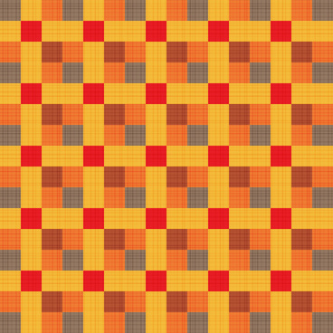

Czysty kod
Zacznijmy od czystego kodu. Z czym kojarzy się wam "czysty" kod? Jak trzeba pisac aby kod był "czysty".
Czytelnie to znaczy? Odpowiednie nazwy? Jedna metoda jedno przeznaczenie? Nie mieszać funkcjonalności komponentów?
Metoda max 20 linii? Klasa max 30 linii? Styl? Kod poprawny semantycznie i syntaktycznie i jednolita ilość spacji i średników itp?
Tak wszystko tak. Ale jest coś na co rzadko zwracamy uwagę lub nie wiemy jak to nazwać.
Sam przypomniałem sobie jak to się nazywa jak przygotowywałem się do tej prezentacji. CLIFFHANGER! Ale pokolei :)
Przepis na jajecznicę
Rozpuścić masło na małej patelni
Wrzucić na stopione masełko szynkę pokrojoną w małe kwadraciki oraz drobno posiekany szczypiorek
rozbić ostrym nożem skorupki jajek i zawartość wylewać na patelnię
Dodać trochę soli oraz pieprzu i mieszać, aż do momentu ścięcia się jajek
Standardowy przepis na jajecznice wygląda mniejwięcej tak:
...
Jak wyglądałby kod dla takiego przepisu?
Kod przepisu na jajecznicę
Jak NIE powinien wyglądać kod tworzenia jajecznicy
dodaj(maslo)
while(maslo.nieJestStopione){
for( atom in atomyWProbceMasla){
atom.dostarczEnergii
}
}
dodaj(pokrojona Szynka)
while(szczypiorek.jestCaly){
oddziaływuj nożem na sieć krystaliczną szczypiorku
}
dodaj(szczypiorek)
noż.dodajEnerigiiPotencjalnej
noz.zamieńEnergięPotencjalnąNaKinetyczną
noż.uderzW(jajko)
dodaj(zawartośćJajka)
dodaj(sól)
for(ziarnkoPieprzu in szczyptaPipeprzu){
dodaj(ziarnkoPieprzu)
}
i mieszać, aż do momentu ścięcia się jajek
Często wygląda tak:
...
pomiędzy wywołaniami funkcji są pętle sięgające atomowego stopnia
szczegółowości. Ten przykład jest mały ale i tak ciężko się to czyta.
W takim razie jak powinien wyglądać kod przepisu na jajecznicę
o dobrym poziomie abstrakcji?
Kod przepisu na jajecznicę
Jak powinien wyglądać kod tworzenia jajecznicy
patelnia.dodaj(maslo)
patelnia.podgrzejDoRostopieniaMasla()
patelnia.dodaj(pokroj(szynka))
patelnia.dodaj(pokroj(szczypiorek))
patelnia.dodaj(rozbij(jajko))
patelnia.dodaj(sól)
patelnia.dodaj(pieprz)
mieszajDoMomentuScieciaSieJajek(patelnia)
Mniejwięcej tak. Wszystkie składowe przepisu są podzielone na
metody które kolejno wykonywane są na odpowiednich obiektach.
Mając taki kod przed sobą odrazu widać co on robi.
Każda linijka jest wywołaniem na tym samym poziomie abstrakcji.
Poziomy abstrakcji
Dodatkowy czinnik wpływający na jakość kodu.
initUi() {
this.initEvaluationInfo();
this.initCostSummary();
this.initEvaluationVariant();
this.initCosts();
this.initTemplateSelect();
this.initDuplicateForm();
this.initShortcuts();
this.initHelpMessage();
this.initStartProject();
}
Czyli poziomy abstkacji. Tutaj przykład. Na podstawie tego fragmetnu wiem że
Inicjalizowane jest UI a w tym informacje o wycenie, podsumowanie kosztów, wariant wyceny,
koszty, wybierak templatek, formularz duplikowania, skróty, jakieś wiadomości pomocnicze
i coś o rozpoczęciu projektu. Inicjalizowanie czyli pewnie wykonuje się na początku przy starcie
strony.
Z tego miejsca od razu wiadomo gdzie czegoś szukać. Jeżeli mam zmienić coś związanego
z wybierakiem to pewnie znajdę to w initTemplateSelect.
Dlaczego przedrostek init? Żeby odróżnić metodę wykonywaną na początku od pozostałych
takich jak handlery, settery, gettery, processingi itp itd
Tak to fragment toolboxa :)
No dobrze ale jak zorganizować kod w taki sposób aby można było zapisać go linijka pod linijką.
Wiem że powinno się tak robić ale nie wychodzi.
Co robić? Jak żyć?
Z pomocą przychodzą wzorce.
Wzorce

Wzorce mają wiele różnych definicji. dla nas na ten moment wystarczy pamiętać że wzorzec to nie jest biblioteka
czy jakaś nowa część języka. Wzorzec to inaczej sposób w jaki piszemy kod.
Oczywiście nie będziemy omawiać wszystkich! Ale zauważyłem że trzy w zupełności wystarczają przy naszej codziennej pracy.
Z czego dwa z nich używa się w olbrzymiej większości przypadków. Mowa o Singletonie, Mediatorze i Obserwatorze.
Singleton
Kreacyjny wzorzec projektowy, którego celem jest ograniczenie możliwości tworzenia obiektów danej klasy do jednej instancji oraz zapewnienie globalnego dostępu do stworzonego obiektu.
Zacznimy od tego najrzadziej używanego. Od Singletona.
Tutaj jest definicja. Z punktu widzenia praktycznego Singleton
potrafi być jeden i tylko jeden. Nawet jak wilokrotnie będziemy próbowali
utworzyć go od nowa, to nadal będzie jeden i ten sam obiekt.
Singleton boilerplate
class EmptySingleton {
constructor() {
if(EmptySingleton.singletonInstance) {
return EmptySingleton.singletonInstance;
}
EmptySingleton.singletonInstance = this;
// TOTO: Zaimplementuj mnie ;)
}
}
Przykład implementacji czystego Singletona. Klasa z konstruktorem
który zawiera warunek sprawdzający czy instancja juz istnieje.
Jeżeli istnieje to zwraca istniejącą instancję.
Jezeli nie istnieje to konstruktor zwraca nową instancję.
Później zobaczymy jak można przykładowo wykorzystać Singleton.
Tymczasem.
Mediator
Wzorzec mediatora umożliwia zmniejszenie liczby powiązań między różnymi klasami, poprzez utworzenie mediatora będącego jedyną klasą, która dokładnie zna metody wszystkich innych klas, którymi zarządza. Nie muszą one nic o sobie wiedzieć, jedynie przekazują polecenia mediatorowi, a ten rozsyła je do odpowiednich obiektów.
Definicja mówi o mediatorze jako o klasie która zna metody wszystkich
swoich dzieci, a dzieci kominikują się ze sobą tylko poprzez mediatora.
To mediator wie jak powinna wyglądać logika połączeń/zależności
pomiędzy elementami systemu. Ułatwia to pisanie i zrozumienie tej
logiki a jednocześnie pozwala zachować czysty kod po stronie
dzieci.
Mediator boilerplate
Jak zaimplementować mediator
class EmptyMediator {
constructor() {
}
}
Jak zaimplementować mediator? O tak. Nie jest to nic innego jak
Klasa. Spotkałem też inne implementacje które umożliwiały tworzenie
kanałów komunikacji na których komponenty systemu miałyby ze sobą
rozmawiać. Ale wydaje mi się że tamte implementacje są bardziej
sformalizowane i lepiej pasują do wzorca Publish–subscribe.
Mediator natomiast jest bardziej umownym wzorcem. Pisząc mediator
piszemy klasę w określony sposób. Dobrze jest wiedzieć wczesniej
jakie elementy będą komunikować się ze sobą w ramach mediatora i
co mają przez to osiągnąć.
Później zobaczymy jak można przykładowo wykorzystać Mediator.
Tymczasem.
Obserwator
Wwzorzec projektowy należący do grupy wzorców czynnościowych. Używany jest do powiadamiania zainteresowanych obiektów o zmianie stanu pewnego innego obiektu.
Obserwator, Reactor, Dispatcher, Eventer, EventEmitter to są różne
nazwy koncepcji o której chciałbym opowiedzieć. Wszystkie różną się
implementacją ale idea pozostaje taka sama.
Obserwator boilerplate
Implementacja obserwatora za pomocą eventów. SimpleEventer
class ComponentTimeout extends SimpleEventer {
constructor() {
super();
this.fire(...);
}
}
// component1.on(...) po stronie obserwatora
Polecam implementacje obserwatora opartą o eventy ponieważ jest
bardzo elastyczna - nie musimy myśleć w którym momencie komunikować
się z mediatorem. Poprostu jeżeli potrzeba to mediator podpina
listenera pod komponent i reaguje w określony sposób na jego zmiany.
Dodatkowo jeżeli chcemy wykorzystać component w innym miejscu to
nadal możemy bo nie jest uzależniony od mediatora.
Implementacja polega na definicji komponentu tak aby mógł propagować
eventy. W tym wypadku użyłem klasy z npm SimpleEventer ale można
użyć dowolnej innej implementacji. Klasa SimpleEventer umożliwia
uruchomienie eventu poprzez metodę fire i podpięcie listenera za
pomocą metody on.
Później zobaczymy jak zaimplementować Obserwator.
Tymczasem.
Podejście komponentowe
Kojarzycie React'a? Vue? Stencil? Polymer? WebCOMPONENTS? Wszystkie nowoczesne frameworki czy biblioteki
opierają się na podejściu komponentowym. Dlaczego lubicie podejście komponentowe?
Czy chcieli byście tak pisać każdy projekt? Nie da się? Bo jquery?
Wiecie że zły lub dobry kod można napisać niezależnie od tego czy korzysta się z frameworka czy nie?
Framework ułatwia zachowanie porządku? A gdybyśmy sami o porządek dbali?
No dobrze przykładowo React ma kilka ficzerów których nie przeskoczymy uzywając jquery.
Ale patrząc tak z perspektywy sposobu pisania kodu - zamykania elementów w komponentach.
Potem komponentów w kolejnych komponentach itd to nie ma tam nic czego w zwykłym js nie można byłoby napisać.
Pomińmy jsx bo to jest zło konieczne :P
Spróbujmy zblizyć się jak najbardziej do komponentowego podejścia pisania kodu używając tylko jquery.
Argumenty przeciw:
div hell
HOC
Lifecycle - tutaj szczegolnie moment w ktorym musimy ogrywac moment renderu
taki odwrócony problem zmiany stanu czyli renter wtedy kiedy nie chcemy
nieczytelny makaron jsx
obsługa formularzy
asynchroniczność
Przykład komponentu React
Status.js
import React from "react"
import { Link, navigate } from "@reach/router"
import { getCurrentUser, isLoggedIn, logout } from "../../utils/auth"
import styles from "./status.module.css"
export default () => {
let details
if (!isLoggedIn()) {
details = (
To get the full app experience, you’ll need to
{` `}
)
} else {
const { name, email } = getCurrentUser()
details = (
Logged in as {name} ({email}
)!
{` `}
{
event.preventDefault()
logout(() => navigate(`/app/login`))
}}
>
log out
)
}
return {details}
}
Spójrzcie na to.
...
Do czego słuzy ten komponent kto mi powie? Plik nazywa się Status.js
Przecież to wygląda jak PHP we wczesnych czasach istnienia internetu!
Ok już nie roustuje. Jak widać można pisać paskudny kod w fajnej bibliotece.
Tak czy siak chcemy tak pisać. Więc co mają frameworki komponentowe co moglibyśmy
odtworzyć u nas w projekcie jquery?
Komponenty! (sic!)
class Component {
}
Mają komponenty! Tak. W projektach jQuery też możemy mieć komponenty. Zazwyczaj wystepują w dwóch rodzajach.
Funkcja zwracająca html lub klasa z odpowiednimi metodami. W jquery możemy zwracać html ale nie mając jsx musieli
byśmy pisać własny parser a to sie mija z celem. Więc funkcje zwracające html pominiemy. Wykorzystajmy klasę.
Co jeszcze mają?
DOM!
class Component {
constructor($context) {
this.$context = $context;
}
}
Tak komponenty w React przykładowo operują na virtual dom. Możemy mieć bibliotekę do tego ale umówmy się
że vanilla js na głównym DOM jest szybsze. Tutaj trzeba zauważyc coś jeszcze. Komponenty najczęściej
operują na fragmencie DOM na którym działają i nie wychodzą poza niego, ale modyfikują zachowanie i wygląd
elementów wewnątrz których dotyczy funkcjonalność komponetu. Jak to zrobimy u nas? Przekażmy fragment DOM jako
pierwszy paramter! Ja lubię nazwyać go $context.
Co jeszcze mają?
Stan!
const defaults = {
text: 'stan poczatkowy'
}
class Component {
constructor($context, options) {
this.$context = $context;
this.settings = Object.assign({}, defaults, options);
}
}
Dobrze mają stan. Tutaj też możemy użyć biblioteki do stanów niemutowalnych i w przypadku zmiany odpowiednio reagować.
Ale załóżmy że pominiemy niemutowalnośc bo nie mamy maszyny stanów takiej jak Redux. Nie mamy też metody render
bo nie mamy jsx. Ale możemy mieć stan początkowy - defaults. Możemy też przyjmować opcje (props jak w react!).
Moglibyśmy też odczytywać z $context data-attributes jako dodatkowe props! Możemy w razie potrzeby defiinować set i get
dla settings i reagować na zmianę! this.settings zaczyna wyglądać jak this.state z reacta. Ja na codzien nazywam to
settings ponieważ używam tego bardziej jak konfigurację niż stan.
Co jeszcze mają?
Kompnenty w komponentach!
import Component2 from './component2';
const defaults = {
text: 'stan poczatkowy'
}
class Component {
constructor($context, options) {
this.$context = $context;
this.settings = Object.assign({}, defaults, options);
this.init();
}
init() {
this.component2 = new Component2(this.$context.find('.js-component2'));
}
}
Tak... Nie mamy jsx i co teraz? Musimy poradzić sobie trochę inaczej. HTML zakładamy że mamy gdzieś renderowany przez serwer.
Nie ma sensu renderować go od nowa. W takim razie zakładamy że w HTML już jest komponent w komponencie. Wygląd obu w css.
Pozostała tylko inicjalizacja funkcjonalności. Więc importujemy zupełnie jak w React klasę komponentu 2 i uruchamiamy go na odpowiednich
elemetach. Tutaj pokazuję bardzo uproszczoną wersję inicjalizacji. Jest w niej jeden koncepcyjny bład. Ktoś ma pomysł?
...
Co jeszcze mają?
Wincyj komponentuf!
import Menu from './menu';
import Content from './content';
import Footer from './footer';
const defaults = {
text: 'stan poczatkowy'
}
class App {
constructor($context = $('body'), options) {
this.$context = $context;
this.settings = Object.assign({}, defaults, options);
this.init();
}
init() {
this.initMenu();
this.initContent();
this.initFooter();
}
initMenu() {
this.menus = this.$context.find('.js-menu').each((index, element) => new Menu($(element)));
}
initContent() {
this.contents = this.$context.find('.js-content').each((index, element) => new Content($(element)));
}
initFooter() {
this.footer = this.$context.find('.js-footer').each((index, element) => new Footer($(element)));
}
}
Wincyj. Ok mamy trzy komponenty. Definicje zmienione już na pętle just in case. W środku Menu oczywiście możemy mieć więcej takich komponentów.
Tak samo w środku Content i w środku Footer. Gdyby spojrzeć na to z perspektywy zobaczyło by się drzewo gdzie korzeniem jest App, gałęziami
Menu, Content, Footer a listkami jakieś mniejsze komponenty.
Ok to już wszytsko mamy? NIE!
Czego brakuje?
...
O ile w górę drzewa możemy się komunikować. O tyle w dół już nie. Menu nie wie o istnieniu Contentu a nawet App.
I dobrze! Bo inaczej Menu byłoby nieprzenaszalne. Ale jak rozwiązać komunikację w takim razie?
Czyli co jeszcze mają frameworki z podejściem komponentowym?
Komponenty rozmawiajo!
import Menu from './menu';
import Content from './content';
import Footer from './footer';
const defaults = {
text: 'stan poczatkowy'
}
class App {
constructor($context = $('body'), options) {
this.$context = $context;
this.settings = Object.assign({}, defaults, options);
this.init();
}
init() {
this.initMenu();
this.initContent();
this.initFooter();
}
initMenu() {
this.menu = new Menu(this.$context.find('.js-menu'));
}
initContent() {
this.content = new Content(this.$context.find('.js-content'));
this.menu.on('button-clicked', ({target: button}) => {
this.content.load(button.url);
});
}
initFooter() {
this.footer = this.$context.find('.js-footer').each((index, element) => new Footer($(element)));
}
}
Załóżmy że po kliknięciu w Menu chcemy przeładować tylko Content.
Załóżmy że content nawet wystawia metodę load która przyjmuje url.
Jak zareagować na kliknięcie w środku Menu? Nie nie szukamy przycisków za pmocą jquery.
Zgodnie z podejściem kompoentowym to Menu zajmuje się elementami w środku js-menu.
Musimy zaimplementować jakiś Eventer na menu. Tak aby po kliknięciu emitował event
o określonej nazwie.
Widzicie do czego dążymy? Z każdym ficzerem zaczerpniętym z podejścia komponentowego
zbliżamy się jednocześnie do wzorca Mediator-Obserwator. To dlatego że
praktycznie każdy framework oparty na komponentach implementuje ten wzorzec.
Komponenty komunikują się ze swoim rodzicem za pomocą eventów. Rodzice natomiast
zmieniając stan dzieci komunikują się w drugą stronę.
Coś jeszcze?
Ale ja kce REDUX bo bez niego nie ma życia i wogóle!
class Redux extends SimpleEventer {
constructor() {
super();
if(EmptySingleton.singletonInstance) {
return EmptySingleton.singletonInstance;
}
EmptySingleton.singletonInstance = this;
}
}
Proszę bardzo. Nie wiem czy to działa ale to jest jeden ze scenariuszy gdzie można wykorzystać Singleton.
Poza tym SimpleEventer ma metody statyczne które można wywoływać globalnie. A redux tym właśnie jest.
I jeszcze jedna rzecz nim przejdziemy do bardziej praktycznej rzeczy. Zawsze nim zaczę pisać jakiś
komponent zastanawiam się gdzie go postawić. Czy bardziej po stronie aplikacji? Czy może jednak
jako narzędzie? Ułatwia mi to przełknięcie braku uniwersalności w części aplikacyjnej, i braku specyficzności
(nie wiem czy istnieje takie słowo) w części narzędziowej. Przykładami Części aplikacyjnej tutaj były Menu, Header, Content.
Część narzędziowa natomiast to SimpleEventer lub Redux.
Pytania?
Napiszmy coś razem. Nie przygotowałem nic poza danymi i pomysłem więc w części praktycznej napiszemy jakąś listę z filtrownicą może co?